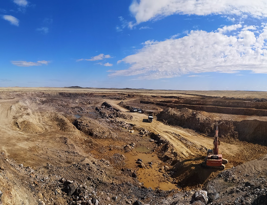

ТОО «Mining Technology» - компания, специализирующаяся на производстве и поставках баритового концентрата более 15 лет. Основное производство расположено в городе Каражал, где осуществляется обогащение баритовой руды с использованием современного оборудования.
100% соответствие стандартам (ГОСТ, API, ISO)
Стабильные объемы и гибкие условия оплаты
Прямые поставки с месторождения
Собственная логистика – доставка по всему миру

Барит (BaSO4) — это природный минерал, состоящий из сульфата бария. Он широко распространен в осадочных и гидротермальных породах и отличается высокой плотностью, химической инертностью и устойчивостью к агрессивным средам.
Благодаря своей высокой плотности, химической инертности и доступности, барит является незаменимым компонентом в бурении нефтяных и газовых скважин. Его использование позволяет значительно повысить безопасность и эффективность буровых работ, снижая риск выбросов и разрушения стенок скважины.
Типы транспортировки: ж/д, автоперевозки, мультимодальные перевозки.